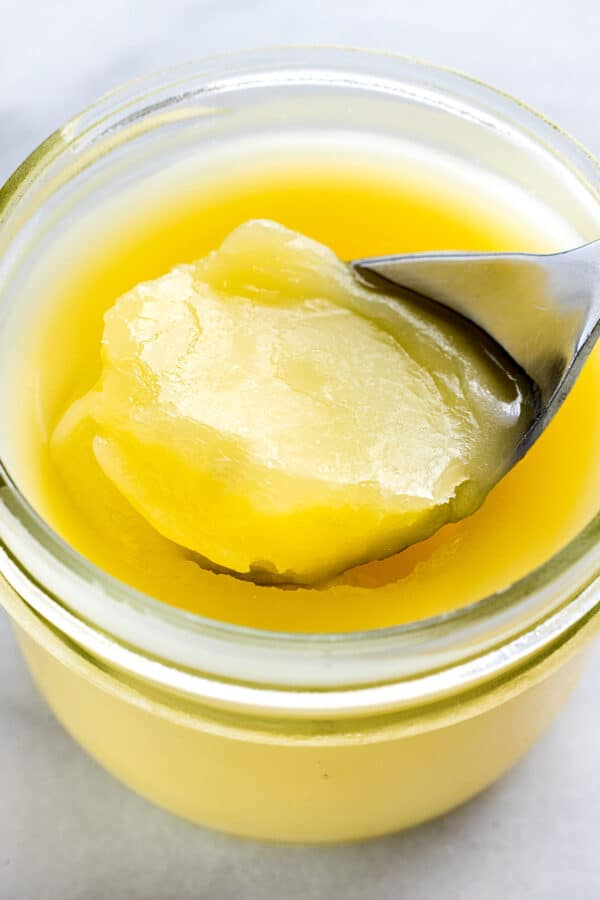

Clarified Butter

Clarified butter
Clarified butter has a more concentrated, richer flavor,
lasts longer in the refrigerator, and has a higher smoke point for
cooking.
Ingredients
Steps
-
In a small saucepan,over low heat warm butter without boiling or
aggitation.
-
Once the butter begins to melt the solids will float to the top and the
water will settle on the bottom.
- When the butter is melted remove the milk solids using a ladle.
-
After all the solids are removed transfer the butterfat to another
container leaving the water in the pan.